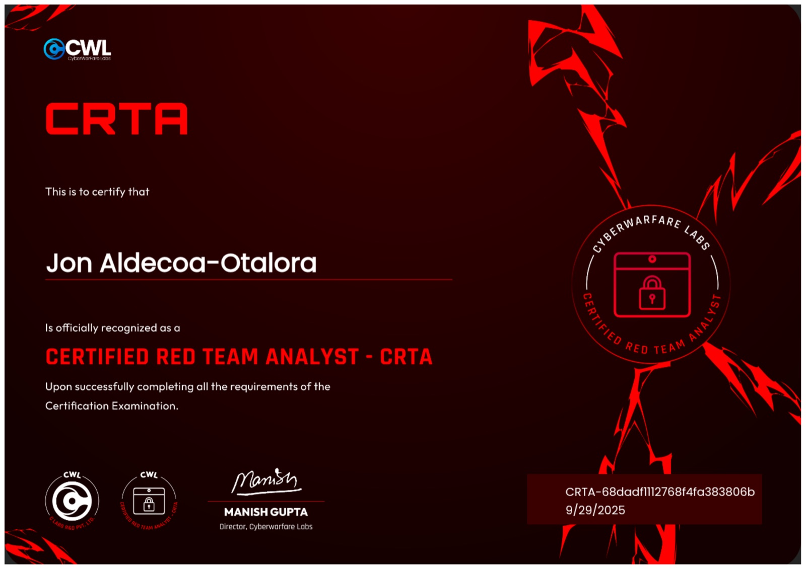

Mi certificado CRTA, emitido por CyberWarFare Labs
Toca hablar del CRTA (Certified Red Team Analyst) de CyberWarFare Labs, que es de esas certificaciones que os vais a encontrar bastante más baratas que el resto y que, precisamente por eso, generan dudas de si realmente merecen la pena o son un poco "certificado de relleno".
Voy a ir directo al grano porque, a diferencia del CRTP, aquí no hay tanto que contar: es una certificación bastante más ligera, y eso también forma parte de la opinión que os voy a dar.
Si tuviera que situarlo, diría que el CRTA se parece bastante al eCPPTv3 en cuanto a enfoque general, aunque también tiene puntos en común con el CPTS de HackTheBox, con la diferencia de que el CRTA está pensado para hacerse en un día, mientras que el CPTS es bastante más complicado, más rebuscado y entra mucho más en profundidad en todos los detalles (ese sería otro nivel de exigencia distinto).
Frente al CRTP, no hay color: el CRTP profundiza mucho más en Active Directory y tiene un laboratorio bastante más completo. El CRTA es más una foto general y rápida, no un certificado para presumir de dominar Active Directory.
Por el precio que tiene, sí lo recomendaría, simplemente por tener un certificado más en el CV y porque no exige apenas tiempo si ya tienes cierta base. Pero siendo honesto, en cuanto a contenido no os va a aportar nada especial ni os va a hacer mejores profesionales por sí solo; es de lo más "mítico" que puede tener un certificado de este estilo, ni más ni menos.
Si estáis empezando y tenéis que elegir un orden, una opción que veo con sentido es hacer primero el CRTA (barato, rápido, os da una base y contexto general) y, en vez de seguir con el CRTP, saltar directamente al CRTE una vez tengáis ya soltura, para no quedaros a medias en la parte de Active Directory. Eso sí, si preferís ir escalón a escalón sin prisa, el CRTP entre medias tampoco sobra, simplemente sabed que no es imprescindible si ya venís con nivel.